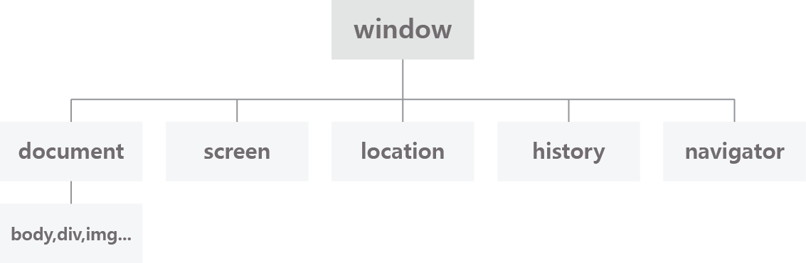

객체_문서 객체 모델(DOM:Document Object Model)
브라우저 객체란: 브라우저에 내장된 객체. 계층적 구조로 이루어져 있음

- window 객체: open(), alert(), prompt(), confirm(), moveTo(), resizeTo(), setInterval(), setTimeout()
- screen 객체: 사용자의 모니터 정보(속성)를 제공
- location 객체
- history 객체
- navigator 객체
1. window 객체
브라우저 객체의 최상위 객체
open(), alert(), prompt(), confirm(), moveTo(), resizeTo(), setInterval(), setTimeout()
| 종류 | 설명 |
|---|---|
| open() | 새 창을 열 때 사용합니다. |
| alert() | 경고 창을 띄웁니다. |
| prompt() | 질의응답 창을 띄웁니다. |
| confirm() | 확인/취소 창을 띄웁니다. |
| moveTo() | 창의 위치를 이동시킬 때 사용합니다. (단, 크롬, 오페라 브라우저에서는 정상작동X) |
| resizeTo() | 창의 크기를 변형시킬 때 사용합니다. (단, 크롬, 오페라 브라우저에서는 정상작동X) |
| setInterval() | 일정 간격으로 지속적으로 실행문을 실행시킬 때 사용합니다. |
| setTimeout() | 일정 간격으로 한 번만 실행문을 실행시킬 때 사용합니다. |
open()
- open() 메서드 기본형
- window.open("url 경로","창 이름","옵션 설정")
| 종류 | 설명 |
|---|---|
| width | 창의 너비를 설정합니다. |
| height | 창의 높이를 설정합니다. |
| left | 창의 좌.우 수평 위치를 설정합니다. |
| top | 창의 상.하 수직 위치를 설정합니다. |
| location | 창의 url 주소 입력 영역 노출 여부를 결정합니다.(숨김=no, 노출=yes) |
| status | 창의 상태 영역 노출 여부를 결정합니다.(숨김=no, 노출=yes) |
| scrollbars | 창의 스크롤 막대 노출 여부를 결정합니다.(숨김=no, 노출=yes) |
| toolbars | 창의 도구상자 노출 여부를 결정합니다.(숨김=no, 노출=yes) |
alert()
- alert() 메서드 기본형
- alert("경고 메시지")
prompt()
- prompt() 메서드 기본형
- prompt("질의 내용","기본 답변");
confirm()
- confirm() 메서드 기본형
- confirm("질의 내용");
moveTo()
- moveTo() 메서드 기본형
- moveTo(x의 위칫값, y의 위칫값);
moveTo()
- resizeTo() 메서드 기본형
- resizeTo(너빗값, 높잇값);
setInterval()/clearInterval()
- setInterval() 메서드 기본형
- var 참조 변수=setInterval( "스크립트 실행문", 시간 간격(밀리초 단위) );
- clearInterval() 메서드 기본형
- clearInterval(setInterval의 참조 변수);
- setTimeout() 메서드 기본형
- var 참조 변수=setTimeout( "스크립트 실행문", 시간 간격(밀리초 단위) );
- clearTimeout() 메서드 기본형
- clearTimeout(setTimeout의 참조 변수);
2. screen 객체
사용자의 모니터 정보(속성)를 제공하는 객체
| 종류 | 설명 |
|---|---|
| screen.width | 화면의 너빗값을 반환합니다. |
| screen.height | 화면의 높잇값을 반환합니다. |
| screen.availWidth | 작업 표시줄을 제외한 화면의 너빗값을 반환합니다. |
| screen.availHeight | 작업 표시줄을 제외한 화면의 높잇값을 반환합니다. |
| screen.colorDepth | 사용자 모니터가 표현 가능한 컬러 bit를 반환합니다. |
3. location 객체
사용자 브라우저의 주소 창에 url에 대한 정보(속성)와 새로 고침 기능(메서드)을 제공
사용시 웹 서버에 올려야 정상적으로 실행 가능
- location 객체 생성 기본형
- location.속성;
- location.메서드();
| 종류 | 설명 |
|---|---|
| location.href | 주소 영역에 참조 주소를 설정하거나 URL을 반환합니다. |
| location.hash | URL에 해시값(#에 명시된 값)을 반환합니다. ex)http://www.js.com#hello |
| location.hostname | URL에 호스트 이름을 설정하거나 반환합니다. |
| location.host | URL에 호스트 이름과 포트 번호를 반환합니다. |
| location.port | URL에 포트 번호를 반환합니다. |
| location.protocol | URL에 프로토콜을 반환합니다. |
| location.search | URL에 쿼리(요청 값)을 반환합니다. ex)http://www.js.com?pagenum=1&sort=DESC |
| location.reload() | 새로고침 |
4. history 객체
사용자가 방문한 사이트 중 이전 방문, 다음 방문 사이트로 돌아갈 수 있는 속성과 메서드 제공
- history 객체 생성 기본형
- history.속성;
- history.메서드();
| 종류 | 설명 |
|---|---|
| length | 방문 기록에 저장된 목록의 개수를 반환합니다. |
| history.back() | 이전 방문한 페이지로 이동합니다. |
| history.forward() | 다음 방문한 페이지로 이동합니다. |
| history.go(이동 숫자) | 이동 숫자가 -2이면 2단계 이전 페이지로 이동합니다. |
5. navigator 객체
현재 방문자가 사용하는 브라우저 정보와 운영체제의 정보를 제공하는 객체
- navigator 객체 기본형
- navigator.속성;
| 종류 | 설명 |
|---|---|
| navigator.appCodeName | 방문자의 브라우저 코드명을 반환합니다. |
| navigator.appName | 방문자의 브라우저 이름을 반환합니다. |
| navigator.appVersion | 방문자의 브라우저 버전 정보를 반환합니다. |
| navigator.language | 방문자의 브라우저 사용 언어를 반환합니다. |
| navigator.product | 방문자의 브라우저 사용 엔진 이름을 반환합니다. |
| navigator.platform | 방문자의 브라우저를 실행하는 운영체제를 반환합니다. |
| navigator.userAgent | 방문자의 브라우저와 운영체제 종합 정보를 제공합니다. |